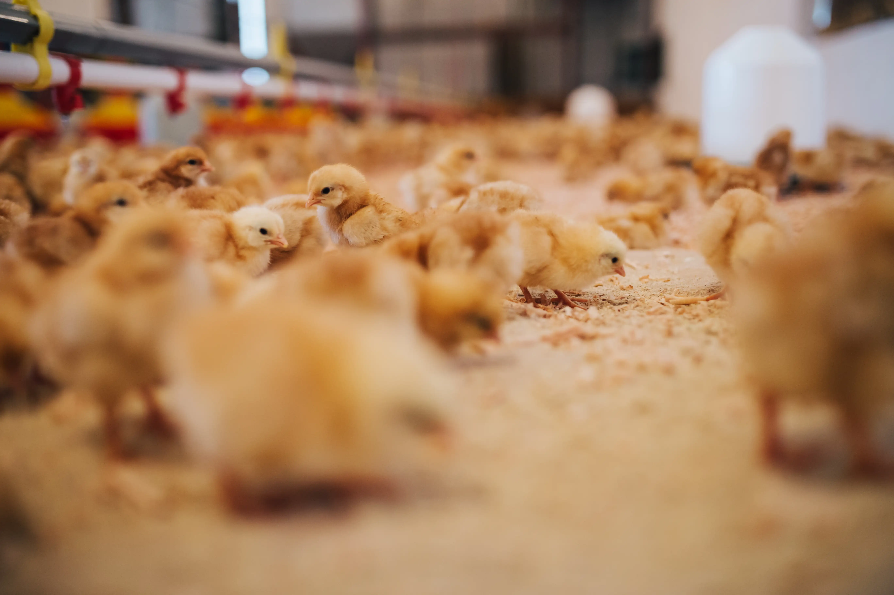

La Terre Murmure
On écoute
Deep Root documente. Ni publicité, ni procès. des enquêtes honnêtes sur ce que la technologie apporte à la terre. Et ce qu’elle ne peut pas encore voir.
Deep Root

Deep Root documente. Ni publicité, ni procès. des enquêtes honnêtes sur ce que la technologie apporte à la terre. Et ce qu’elle ne peut pas encore voir.

FarmSync est la première application d’intelligence intégrée directement dans la ferme et les animaux. Elle combine une analyse visuel du terrain par senseurs avec des capteurs sous-cutanée. L’ensemble en continue, FarmSync traduit les comportements en données directes, avec directives. Cette technologie vous donne une longueur d’avance.
Cependant, derrière l'interface épurée et les promesses de rentabilité, que se passe-t-il lorsque le code se confronte à la rugosité du quotidien ? Deep Root a suivi quatre exploitation fraichement équipé de ce nouveau système. Des nuits d’agnelage aux surveillances de batiments, nous avons essayer de trouver les points de ruptures de la machine face aux réalités du vivant.
#Réseau #Naissance
Lire le cas
Un éleveur épuisé s’en va dormir confiant des naissances à FarmSync. L’agneau se présente mal, l’orage coupe le réseau et l’alerte ne part jamais. Ce cas interroge sur la limite de l’automatisation.